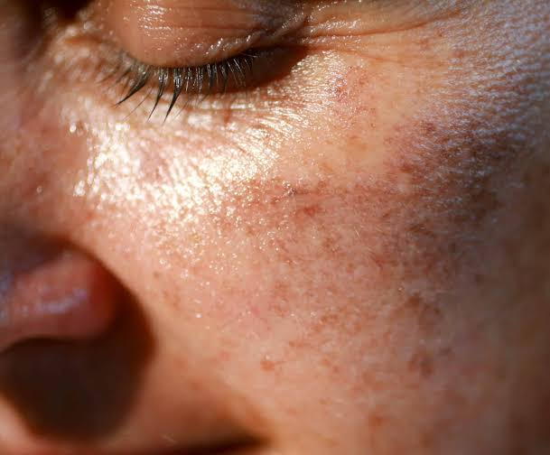
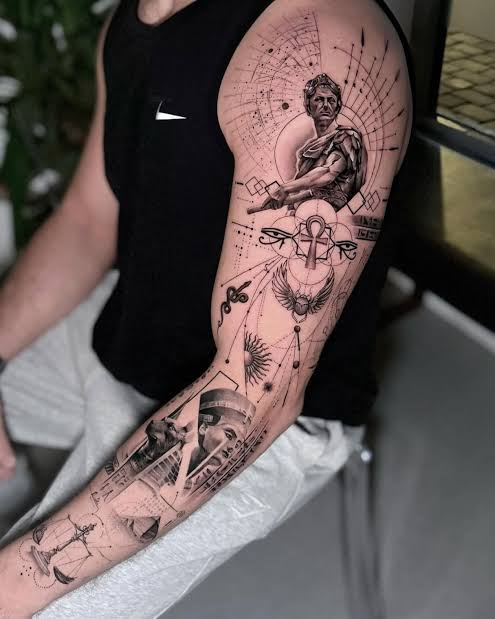

Wavelengths
네 가지 파장 구성

Q-switched laser system
정교한 펄스 제어와 다양한 파장.
폭넓은 색소 시술 접근을 지원합니다.
여러 파장과 펄스 모드를 기반으로 색소 및 문신 관련 시술 등에 활용할 수 있는 Q-switched 레이저 시스템입니다.

At a glance
네 가지 파장 구성
다양한 레이저 모달리티
고출력 펄스 옵션
Technology
제품을 이해하는 데 필요한 주요 기술을 간결하게 살펴봅니다.
분획 방식의 에너지 전달을 통해 피부에 미세한 레이저 조사 영역을 형성하는 기술입니다.
펄스의 형태와 에너지 전달을 제어하는 다양한 모드를 제공합니다.
시술 목적과 파장에 맞춰 선택할 수 있는 핸드피스 옵션입니다.
Key information
※ 세부 사양과 적용 조건은 장비 구성 및 제조사 자료를 기준으로 확인해야 합니다.
Applications
제품의 대표적인 활용 분야를 확인해 보세요.
모발을 대상으로 한 레이저 시술

피부 색소를 대상으로 한 시술
여드름 피부를 위한 레이저 접근

문신 색소를 대상으로 한 레이저 시술
Experience Fotona
제품 상담 및 데모 예약을 통해 자세한 내용을 확인할 수 있습니다.